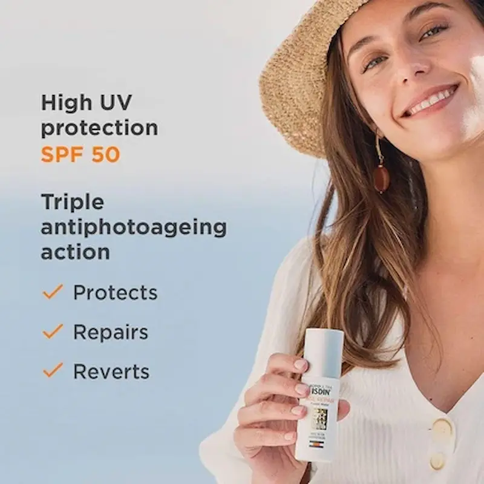
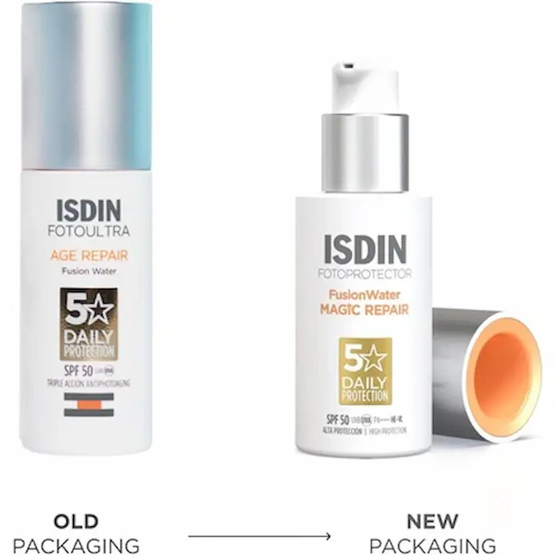

Isdin FotoUltra Age Repair: SPF Nr. 1 împotriva fotoîmbătrânirii
Recenzie independentă. Produsul nu este sponsorizat.
Analizăm de ce acest fluid a devenit etalonul îngrijirii anti-aging: cum repară ADN-ul celular, redă fermitatea pielii și oferă o protecție invizibilă în condițiile verilor toride din România.

Review Isdin FotoUltra Age Repair SPF 50
Un fotoprotector revoluționar pe bază de apă, care combină protecția solară maximă cu o îngrijire anti-îmbătrânire avansată. Analizăm în detaliu acțiunea tehnologiei DNA Repairsomes®, care ajută celulele să repare daunele la nivelul ADN-ului cauzate de radiațiile ultraviolete. Datorită conținutului de peptide Q10 și a booster-ului de colagen, produsul nu doar previne fotoîmbătrânirea, ci reduce activ ridurile existente, redând pielii fermitatea pierdută. Textura ultra-lejeră Fusion Water se absoarbe instantaneu, nu lasă luciu inestetic și servește ca o bază ideală pentru machiaj, oferind o protecție complexă împotriva smogului urban și a stresului oxidativ.
De ce merită atenția acest produs?
Isdin FotoUltra Age Repair SPF 50+ este un produs de protecție solară cu efect anti-aging, conceput pentru a proteja pielea împotriva fotoîmbătrânirii. Formula combină protecție ridicată UVA/UVB cu ingrediente active care ajută la reducerea semnelor de îmbătrânire.
Produsul contribuie la diminuarea aspectului ridurilor, îmbunătățirea elasticității pielii și uniformizarea tonului. Textura ușoară se absoarbe rapid, fiind potrivită pentru utilizare zilnică și ușor de integrat în rutina de dimineață.


Textură și prima utilizare
Spre deosebire de ecranele solare clasice și dense, Age Repair Fusion Water dispune de o textură revoluționară pe bază de apă. Se topește instantaneu pe piele, fără a lăsa urme albe, senzație lipicioasă sau efect de „mască”, aspect critic pentru climatul canicular din România.
Produsul oferă senzația de „piele nudă” și o hidratare profundă. Fluidul se așază ideal sub machiaj, nu se strânge și nu irită ochii (tehnologia Safe-Eye), asigurând un confort maxim chiar și pentru cea mai sensibilă piele pe parcursul întregii zile.
Analiza compoziției: Ce conține?
Formula inovatoare se bazează pe tehnologia brevetată **DNA Repairsomes®** — fotoliază încapsulată care recunoaște și repară deteriorările ADN-ului cauzate de radiațiile ultraviolete.
Secretul efectului anti-îmbătrânire constă în **peptidele Collagen Booster**, care stimulează producția proprie de colagen, și în **Lipopeptida Q10**, care redă tenului strălucirea naturală. Adaosul de **Acid Hialuronic** asigură retenția umidității, netezind vizibil ridurile fine și sporind elasticitatea dermului.
Protecție vs Reparare: cum se utilizează corect?
Mulți confundă o cremă solară obișnuită cu un produs cu acțiune triplă. Age Repair Fusion Water este, în primul rând, un tratament regenerator activ care lucrează la nivel celular chiar și atunci când nu mai ești la soare.
Nu este doar un scut împotriva arsurilor. Este un **produs inteligent** care, datorită tehnologiei DNA Repairsomes®, corectează erorile din structura ADN-ului acumulate de-a lungul anilor sub soarele intens. După o lună de utilizare regulată, pielea devine mai densă, ridurile fine sunt netezite, iar fața capătă o strălucire sănătoasă, fără luciu gras.
Lid-hack: Pe toată fața sau doar pe zonele cu riduri?
Spre deosebire de multe produse anti-aging dens, acest fluid trebuie distribuit pe **toată fața**, inclusiv în zona conturului ochilor. Datorită tehnologiei exclusive Safe-Eye Tech, produsul nu irită mucoasa și nu provoacă lăcrimare, ceea ce îl face soluția ideală pentru protecția pielii pleoapelor, cea mai subțire și vulnerabilă zonă.
Dacă folosești seruri active (de exemplu, cu vitamina C), aplică Age Repair ca **ultimul pas** al rutinei de dimineață. Acesta servește ca o bază de machiaj excelentă: textura Fusion Water uniformizează micro-relieful, nu se strânge și previne oxidarea fondului de ten sub influența soarelui puternic din România.
Cui NU i se potrivește?
Acest produs este un fluid high-tech pe bază de apă, nu un balsam bogat în lipide. Poate părea insuficient de hrănitor pentru posesorii unui **ten foarte uscat**, în special în perioada iernii sau în caz de descuamare accentuată. În astfel de situații, este recomandat să fie utilizat ca strat protector peste o cremă nutritivă.
De asemenea, dacă ești în căutarea unui simplu produs de protecție solară de buget, exclusiv pentru plajă, această variantă poate părea redundantă. Valoarea sa principală constă în **repararea inteligentă a ADN-ului** și acțiunea asupra ridurilor (DNA Repairsomes®). Este o investiție în longevitatea pielii feței, nu doar un remediu împotriva arsurilor solare pentru corp.
Unde poți găsi Isdin FotoUltra Age Repair SPF 50+?
Dacă ești în căutarea unui produs cu protecție solară și efect anti-aging, Isdin FotoUltra Age Repair SPF 50+ poate fi găsit în farmacii și magazine online din Romania.
Verifică disponibilitatea și prețul*Linkul este oferit în scop informativ. În cazul unui parteneriat, aici va fi plasat link direct către produs.
Întrebări frecvente
Va lăsa fluidul o senzație grasă sau greoaie pe piele?
Absolut nu. Tehnologia Fusion Water pe bază de apă este concepută special pentru a oferi un finisaj imponderabil. Fluidul se absoarbe instantaneu, nu lasă urme albe sau luciu inestetic, fiind alegerea ideală pentru climatul canicular din România.
Este sigur să îl aplic în zona conturului ochilor?
Da, aceasta este una dintre caracteristicile de bază ale produselor ISDIN. Datorită tehnologiei Safe-Eye Tech, produsul nu irită mucoasa și nu provoacă usturime. Poți proteja cu încredere zona „laba gâștei”, care este cea mai expusă fotoîmbătrânirii.
Cât de repede voi observa efectul anti-îmbătrânire?
Hidratarea și luminozitatea sunt vizibile imediat după aplicare. Pentru repararea profundă a ADN-ului și reducerea vizibilă a ridurilor (datorită peptidelor), este necesară o utilizare regulată timp de 28 de zile — acesta fiind ciclul de reînnoire celulară a pielii.
Pot combina acest SPF cu seruri (Vitamina C, Retinol)?
Da, Age Repair funcționează excelent în straturi. Dimineața, aplică-l peste un ser cu Vitamina C pentru a amplifica protecția antioxidantă. Rezervă Retinolul pentru seară — Age Repair va pregăti pielea pentru regenerare, minimizând daunele acumulate în timpul zilei.